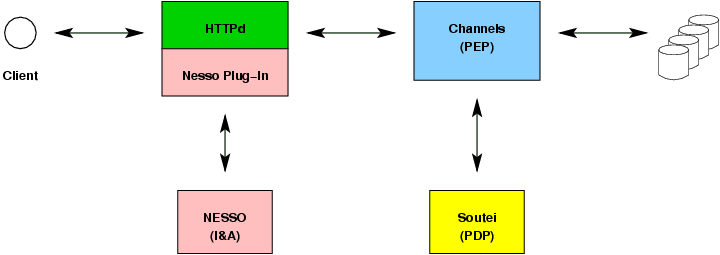

We demonstrate Soutei integrated with Navy Enterprise Single Sign-On
(NESSO) and Metcast Channels. We include examples of
delegation and Risk Adaptable Access Control
(RAdAC).

Our initial policy states that:
sam.sysadmin may delegate permission to create channels.
The creator of a channel may delegate access to his channel.